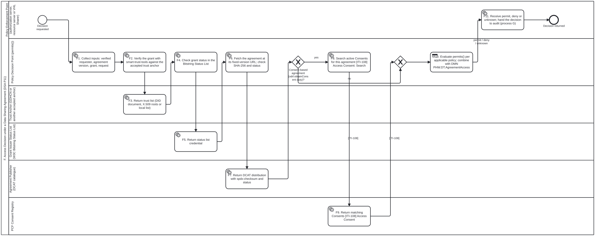
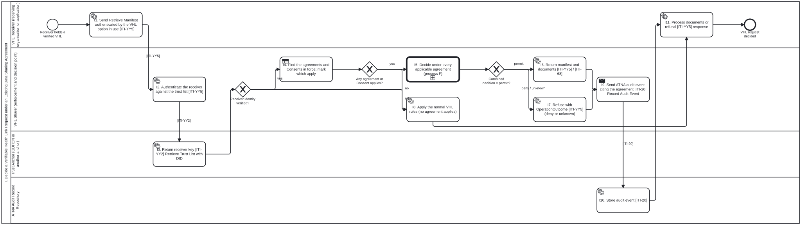

This page describes the core business processes and workflows for the Personal Health Wallet (PHW) Implementation Guide, integrating IHE IT Infrastructure Privacy Consent on FHIR (PCF) v1.1.0 (https://profiles.ihe.net/ITI/PCF/1.1.0/) and IHE IT Infrastructure Verifiable Health Links (VHL) v1.0.0-comment (https://profiles.ihe.net/ITI/VHL/1.0.0-comment/).
A business process is a set of related activities or tasks performed together by system actors and human personas to achieve a health information exchange objective. Each workflow below is authored in BPMN 2.0 (input/business-processes/PHW.A.bpmn, input/business-processes/PHW.B.bpmn, input/business-processes/PHW.C.bpmn) with full BPMN Diagram Interchange (bpmndi:BPMNDiagram) layout and rendered to SVG (input/images/PHW.A.svg, input/images/PHW.B.svg, input/images/PHW.C.svg). The data sharing agreement processes D to H, below, take the same form.
Architectural Principles
- Trust-Anchor Neutrality: Every process models PKI key publication (
[ITI-YY1]) and trust list retrieval ([ITI-YY2]) against an abstract Trust Anchor actor (https://profiles.ihe.net/ITI/VHL/ActorDefinition/TrustAnchor). The WHO Global Digital Health Certification Network (GDHCN) is one possible Trust Anchor implementation among others (such as national health PKI roots, regional cross-border trust networks, or bilateral federation anchors). - Explicit IHE PCF and VHL Transaction Binding: Every cross-actor task names its normative IHE transaction (
[ITI-108]Access Consent,[ITI-YY1]Submit PKI Material with DID,[ITI-YY2]Retrieve Trust List with DID,[ITI-YY3]Generate VHL,[ITI-YY4]Provide VHL,[ITI-YY5]Retrieve Manifest). - No IHE IUA Claim: Consent management and enforcement operate over IHE PCF
[ITI-108]Access Consent and VHL[ITI-YY1]–[ITI-YY5]without claiming conformance to IHE Internet User Authorization (IUA[ITI-71]). Three-Valued Consent Decision and PROV-O Provenance: During VHL redemption (Process C), patient privacy consent directives retrieved via [ITI-108]are translated to W3C ODRL 2.2 policies (consentToOdrl()) and evaluated via three-valueddecide()(permitdenyunknown), recording a W3C PROV-Oprov:ActivitycitingConsent.idandConsent.meta.versionId.
Overview of Key Business Processes
The following table summarizes the three BPMN 2.0 consent and Verifiable Health Link business processes defined in this Implementation Guide. The data sharing agreement processes are summarized in their own section below.
| # | Process Name | Process ID | Personas | Objectives |
|---|---|---|---|---|
| A | Record and Manage Patient Privacy Consent | PHW.A | Holder, Consent Recorder, Consent Registry | Capture, update, or revoke a patient privacy consent directive (IHE.PCF.consentBasic or IHE.PCF.consentIntermediate) in a PCF Consent Registry via [ITI-108] Access Consent (Post, Put, Delete). |
| B | Issue Consent-Backed Verifiable Health Link | PHW.B | Holder, VHL Sharer, Consent Registry, Trust Anchor | Register VHL Sharer signing keys with a Trust Anchor ([ITI-YY1]), verify or record active patient consent ([ITI-108]), and generate a signed Verifiable Health Link ([ITI-YY3]) stored in the Holder’s Personal Health Wallet. |
| C | Present and Redeem Verifiable Health Link with PCF Consent Enforcement | PHW.C | Holder, VHL Receiver, Trust Anchor, VHL Sharer, Consent Registry | Present a VHL ([ITI-YY4]), verify cryptographic trust via a Trust Anchor ([ITI-YY2]), request the manifest ([ITI-YY5]), query active PCF Consent ([ITI-108]), and enforce three-valued (permit / deny / unknown) ODRL consent evaluation with PROV-O provenance. |
Workflows
A. Record and Manage Patient Privacy Consent
- Process ID:
PHW.A - BPMN Source:
input/business-processes/PHW.A.bpmn - Objective: Capture, update, or revoke a patient privacy consent directive (
IHE.PCF.consentBasicorIHE.PCF.consentIntermediate) in a PCF Consent Registry using the IHE PCF Access Consent[ITI-108]transaction (Post,Put,Delete), trust-anchor neutral and with no IUA claim.
![Process A — Record and Manage Patient Privacy Consent (PCF [ITI-108])](PHW.A.svg)
| Activity ID | Lane / Actor | Task Name | IHE PCF / VHL Transaction & Conformance Profile |
|---|---|---|---|
PHW.A.1 | VHL Holder (Patient / Personal Health Wallet) | Select base policy & disclosure scope (PCF Basic / Intermediate Consent) | Selection of base policy (Consent.policy.uri), PCFPurposeOfUseVS purpose of use, authorized actors, validity period, and clinical data scope |
PHW.A.2 | PCF Consent Recorder (Wallet / VHL Sharer) | Construct FHIR Consent & Provenance (IHE.PCF.consentBasic / Intermediate) | https://profiles.ihe.net/ITI/PCF/StructureDefinition/IHE.PCF.consentBasic, IHE.PCF.consentIntermediate, IHE.PCF.provenance |
PHW.A.3 | PCF Consent Recorder (Wallet / VHL Sharer) | Create consent directive [ITI-108] Access Consent: Post | [ITI-108] Access Consent (POST [base]/Consent or transaction Bundle with Provenance) |
PHW.A.4 | PCF Consent Recorder (Wallet / VHL Sharer) | Update or revoke directive [ITI-108] Access Consent: Put / Delete | [ITI-108] Access Consent (PUT [base]/Consent/[id] or DELETE [base]/Consent/[id]) |
PHW.A.5 | PCF Consent Registry | Validate, version & persist Consent + Provenance [ITI-108] Access Consent | [ITI-108] Access Consent responder (IHE.PCF.consentRegistry), assigning Consent.id and Consent.meta.versionId |
PHW.A.6 | VHL Holder (Patient / Personal Health Wallet) | Confirm recorded Consent.id & versionId [ITI-108] Access Consent response | [ITI-108] Access Consent response (201 Created / 200 OK) |
Consent rules, from the person’s side
Process A is the person-side view of the data sharing agreement’s consent process (P9). The owner set four rules on 2026-10-30:
- Legal basis. Only an agreement whose legal basis is consent asks for consent. Treatment, public-health law and research waivers do not rest on consent.
- Version pinning. The person consents to one fixed version of the agreement:
Consent.policy.uriis that version’s URL. If the agreement is amended to widen use, the new version needs new consent. An amendment that narrows use does not. - Plain language. The person is shown the agreement’s plain-language summary, published and hashed with the agreement. That summary is what they consent to (task
PHW.A.1). - Scale. Where the person has recorded nothing, the jurisdiction’s chosen PCF implicit default policy applies: opt-in (for example
Policy-deny) or opt-out (for examplePolicy-basic-normalorPolicy-all-normal). Registry lookups may be cached (taskPHW.C.5), but withdrawing a Consent (statusbecomesinactive, taskPHW.A.4) ends every cached result that holds it at once.
B. Issue Consent-Backed Verifiable Health Link
- Process ID:
PHW.B - BPMN Source:
input/business-processes/PHW.B.bpmn - Objective: Publish VHL Sharer PKI signing keys to an abstract Trust Anchor (
[ITI-YY1]), verify or record an active patient privacy consent directive ([ITI-108]), and generate a signed Verifiable Health Link ([ITI-YY3]) for storage in the Holder’s Personal Health Wallet. Trust-anchor neutral (WHO GDHCN is one possible Trust Anchor among others).
![Process B — Issue Consent-Backed Verifiable Health Link (VHL [ITI-YY1], [ITI-YY3], PCF [ITI-108])](PHW.B.svg)
| Activity ID | Lane / Actor | Task Name | IHE PCF / VHL Transaction & Conformance Profile |
|---|---|---|---|
PHW.B.1 | VHL Sharer (grouped with PCF Consent Recorder) | Submit Sharer PKI signing key [ITI-YY1] Submit PKI Material with DID | [ITI-YY1] Submit PKI Material with DID (https://profiles.ihe.net/ITI/VHL/Requirements/PublishPKIMaterial) |
PHW.B.2 | Trust Anchor (e.g. GDHCN, national, or regional anchor) | Publish key in Trust Anchor trust list [ITI-YY1] (GDHCN or other anchor) | [ITI-YY1] Submit PKI Material with DID (https://profiles.ihe.net/ITI/VHL/CapabilityStatement/IHE.VHL.TrustAnchor) |
PHW.B.3 | VHL Holder (Patient / Personal Health Wallet) | Request VHL generation [ITI-YY3] Generate VHL ($generate-vhl) | [ITI-YY3] Generate VHL (https://profiles.ihe.net/ITI/VHL/OperationDefinition/GenerateVHL) |
PHW.B.4 | VHL Sharer (grouped with PCF Consent Recorder) | Query or record active Consent [ITI-108] Access Consent: Search / Post | [ITI-108] Access Consent (GET [base]/Consent?patient=...&status=active or POST [base]/Consent) |
PHW.B.5 | PCF Consent Registry | Return active PCF Consent (Consent.id + versionId) [ITI-108] Access Consent | [ITI-108] Access Consent responder (IHE.PCF.consentRegistry) |
PHW.B.6 | VHL Sharer (grouped with PCF Consent Recorder) | Assemble & sign VHL payload bound to Consent [ITI-YY3] Generate VHL | [ITI-YY3] Generate VHL (IHE.VHL.VHLSharer), signing with [ITI-YY1] key material |
PHW.B.7 | VHL Holder (Patient / Personal Health Wallet) | Store signed VHL in Personal Health Wallet [ITI-YY3] Generate VHL | [ITI-YY3] Generate VHL response received by VHLHolder |
C. Present and Redeem Verifiable Health Link with PCF Consent Enforcement
- Process ID:
PHW.C - BPMN Source:
input/business-processes/PHW.C.bpmn Objective: Present a Verifiable Health Link ( [ITI-YY4]), verify cryptographic signatures against a Trust Anchor’s trust list ([ITI-YY2]), request the health document manifest ([ITI-YY5]), query active PCF Consent ([ITI-108]), and enforce three-valued (permitdenyunknown) ODRL consent evaluation with W3C PROV-O decision provenance. Trust-anchor neutral (WHO GDHCN is one possible Trust Anchor among others) and makes no IUA claim.
![Process C — Present and Redeem Verifiable Health Link with PCF Consent Enforcement (VHL [ITI-YY2], [ITI-YY4], [ITI-YY5], PCF [ITI-108])](PHW.C.svg)
| Activity ID | Lane / Actor | Task Name | IHE PCF / VHL Transaction & Conformance Profile |
|---|---|---|---|
PHW.C.1 | VHL Holder (Patient / Personal Health Wallet) | Present VHL payload to Receiver [ITI-YY4] Provide VHL | [ITI-YY4] Provide VHL (https://profiles.ihe.net/ITI/VHL/Requirements/UtilizeVHL) |
PHW.C.2 | VHL Receiver (Verifier / Relying Party) | Request Trust Anchor key list [ITI-YY2] Retrieve Trust List with DID | [ITI-YY2] Retrieve Trust List with DID (https://profiles.ihe.net/ITI/VHL/Requirements/RetrievePKIMaterial) |
PHW.C.3 | Trust Anchor (e.g. GDHCN, national, or regional anchor) | Return signed trust list [ITI-YY2] (GDHCN or other Trust Anchor) | [ITI-YY2] Retrieve Trust List with DID (IHE.VHL.TrustAnchor) |
PHW.C.4 | VHL Receiver (Verifier / Relying Party) | Verify VHL signature & request manifest [ITI-YY5] Retrieve Manifest | [ITI-YY5] Retrieve Manifest (https://profiles.ihe.net/ITI/VHL/Requirements/RequestVHLDocuments) |
PHW.C.5 | VHL Sharer (grouped with PCF Consent Authorization Server) | Query active patient Consent [ITI-108] Access Consent: Search | [ITI-108] Access Consent: Search (GET [base]/Consent?patient=...&status=active) |
PHW.C.6 | PCF Consent Registry | Return active PCF Consent Bundle [ITI-108] Access Consent | [ITI-108] Access Consent responder (IHE.PCF.consentRegistry), returning Consent.id and Consent.meta.versionId |
PHW.C.7 | VHL Sharer (grouped with PCF Consent Authorization Server) | Evaluate PCF Consent (ODRL decide: permit / deny / unknown) & PROV-O log | consentToOdrl() + three-valued decide() (permit | deny | unknown) + W3C PROV-O prov:Activity citing Consent.id and Consent.meta.versionId |
PHW.C.8 | VHL Sharer (grouped with PCF Consent Authorization Server) | Return authorized manifest & documents [ITI-YY5] Retrieve Manifest (permit) | [ITI-YY5] Retrieve Manifest (200 OK Bundle of DocumentReference / clinical resources when decision is permit) |
PHW.C.9 | VHL Sharer (grouped with PCF Consent Authorization Server) | Refuse disclosure with OperationOutcome [ITI-YY5] (deny or unknown) | [ITI-YY5] Retrieve Manifest (403 Forbidden OperationOutcome when decision is deny or unknown) |
PHW.C.10 | VHL Receiver (Verifier / Relying Party) | Process clinical documents or refusal notice [ITI-YY5] response | [ITI-YY5] Retrieve Manifest consumer (IHE.VHL.VHLReceiver) |
Data Sharing Agreement Processes (Server to Server)
Processes D to H implement a data sharing agreement (DSA) between a data provider and a data recipient. Each one is a technical process from the DSA process analysis for folio-assistant#2702 (P4, P5, P11, P12 and P13). The owner chose this IG as their home on 2026-10-30 (19:59Z). They apply to every agreement, whether it is computable (a W3C ODRL 2.2 Agreement derived from the legal text) or document-only (a signed PDF). The only difference is where the access rule comes from: the ODRL Agreement, or a configuration an administrator sets by hand from the PDF.
What every process relies on:
- The agreement’s fixed-version URL. Each agreement version is published at an immutable URL, with its SHA-256, and catalogued as a DCAT 3
dcat:Distributionwithspdx:checksum(DCAT 3 §6.8, §6.8.20). For a computable agreement this URL is also the ODRLuid. Tokens, grants, Consents and audit records cite this URL, never a “latest” URL. - Grants are W3C Verifiable Credentials 2.0. A grant cites the agreement through
relatedResource(VC DM 2.0 §5.3), and its status is a W3C Bitstring Status List entry. litlfred/smart-trust-tools verifies it. - Pluggable trust anchors. WHO GDHCN is one option. The others are a national X.509 PKI, the party’s own
did:web, or a local list. UDAP, as profiled by HL7 SSRAA, is approved (owner, 2026-10-30 20:28Z) for X.509 certificate-based registration and authentication, which fits a national X.509 PKI as the anchor. OpenID Federation is out of scope. - No invented fields. Where no standard has a slot, the text says so as a gap or open point.
| # | Process Name | Process ID | DSA process | Objectives |
|---|---|---|---|---|
| D | Register a Server Client under a Data Sharing Agreement | PHW.D | P4 | Register the recipient’s server as an OAuth client (RFC 7591, UDAP via HL7 SSRAA, or by an administrator), authenticated by mTLS (RFC 8705) or a JWT assertion (RFC 7523; with UDAP, private_key_jwt with an x5c chain), and record which agreement versions it may act under. |
| E | Server-to-Server Access under a Data Sharing Agreement | PHW.E | P5 | Issue a short-lived, key-bound token (DPoP, RFC 9449) for an RFC 9396 authorization_details request whose identifier (§2.2) is the agreement’s fixed-version URL, after the access decision. |
| F | Access Decision under a Data Sharing Agreement | PHW.F | P11 | Run permits() on the verified grant and the agreement. A consent-based agreement also needs an active PCF Consent. The result is permit, deny or unknown, and unknown is never permit. |
| G | Audit, Provenance and Duty Checks under a Data Sharing Agreement | PHW.G | P12 | Record each decision as a W3C PROV-O record that cites the agreement, and as an IHE ATNA audit event ([ITI-20]). Record duty fulfilment and review it. |
| H | Revocation and Suspension under a Data Sharing Agreement | PHW.H | P13 | Stop grants (Bitstring Status List), tokens and clients (RFC 7009), and keys (trust list or CRL). |
In the tables, † marks a section number cited from standing knowledge and not re-checked when this page was written. The RFC 9396, RFC 9449, RFC 8693, W3C VC 2.0, W3C Bitstring Status List and DCAT 3 sections were checked against the published specifications on 2026-10-30.
D. Register a Server Client under a Data Sharing Agreement
- Process ID:
PHW.D - BPMN Source:
input/business-processes/PHW.D.bpmn - Objective: Register the data recipient’s server as an OAuth client of the data provider’s authorization server. It is bound to a key published under a trust anchor the agreement accepts, and to the agreement versions it may act under.

| Activity ID | Lane / Actor | Task Name | Standard and section |
|---|---|---|---|
PHW.D.1 | Data Recipient System (OAuth client) | Prepare client key or certificate under an accepted trust anchor | Key published under an accepted anchor (DSA P3): DID Core 1.0 + did:web, or RFC 5280 |
PHW.D.2 | Data Recipient System (OAuth client) | Send dynamic client registration request (RFC 7591) | RFC 7591 §3.1†; private_key_jwt metadata RFC 7523 §2.2†; tls_client_auth RFC 8705 §2.1†. RFC 7592 is Experimental and needs owner approval |
PHW.D.3 | Data Provider Administrator (person) | Enter client by hand, scopes from the signed agreement text | Document-only route. The change record cites the agreement URL and its SHA-256 |
PHW.D.4 | Provider Authorization Server | Validate client key or certificate against the accepted trust anchor | DID document, RFC 5280 §6† path validation, or a local list. UDAP route: UDAP DCR §4‡ (SSRAA §3.2.3): software statement signature, x5c chain to the trust community’s anchor, requested parameters |
PHW.D.5 | Trust Anchor (GDHCN or another accepted anchor) | Return trust list or certificate status | GDHCN did:web:tng-cdn.who.int:v2:trustlist; CRL RFC 5280 §5† |
PHW.D.6 | Provider Authorization Server | Record which agreement versions the client may act under | Gap: neither RFC 7591 nor the SSRAA software statement has a field for this, so it is the server’s own configuration. It is keyed by the fixed-version URL, the same value as RFC 9396 identifier (§2.2) |
PHW.D.7 | Provider Authorization Server | Issue client_id | RFC 7591 §3.2.1†. UDAP route: 201 Created per UDAP DCR §5.1‡, error per §5.2‡ (SSRAA §3.2.3); modify or cancel per SSRAA §3.4 |
PHW.D.8 | Data Recipient System (OAuth client) | Read authorization server metadata | RFC 8414 §3†. UDAP route: already read in PHW.D.9; token requests use SSRAA §5.2.1–§5.2.2 |
PHW.D.9 | Data Recipient System (OAuth client) | Discover UDAP server metadata (GET {baseURL}/.well-known/udap) | HL7 SSRAA §2.1, §2.2, §2.3 (signed_metadata), §2.4; UDAP Server Metadata §1‡ |
PHW.D.10 | Data Recipient System (OAuth client) | Send UDAP registration request with signed software statement | HL7 SSRAA §3.1 (claims; iss = certificate SAN URI; token_endpoint_auth_method = private_key_jwt), §3.2.3 (request body, udap = 1), §3.3 (certifications); UDAP DCR §2‡ |
UDAP route (owner approval, 2026-10-30 20:28Z). UDAP is used as profiled by HL7 Security for Scalable Registration, Authentication, and Authorization (SSRAA), hl7.fhir.us.udap-security 2.0.0 (STU 2, canonical http://hl7.org/fhir/us/udap-security), the IG that VHL’s OAuth with SSRAA Option names. Its trust is X.509: the client’s certificate chains to an anchor of a trust community, so a national X.509 PKI can serve as the anchor without GDHCN. SSRAA section numbers were read from the IG source (HL7/fhir-udap-security-ig, tag 2.0.0, commit d8ac5a63): they follow its page order, and they agree with the IG’s own cross-references, which is also how ITI-YY5 cites them (“SSRAA Sections 2 and 3”, “Section 5.2.1”). The rendered pages at hl7.org were not reachable to check. SSRAA 2.0.0 is US realm; the source’s main branch now builds a universal-realm successor, hl7.fhir.uv.fast-security 3.0.0 (STU 3 post-ballot CI build), not yet published. ‡ marks a section of a UDAP.org specification (UDAP Dynamic Client Registration STU1, UDAP Server Metadata STU1, UDAP JWT-Based Client Authentication STU1) as SSRAA links it; udap.org was not reachable to check it.
E. Server-to-Server Access under a Data Sharing Agreement
- Process ID:
PHW.E - BPMN Source:
input/business-processes/PHW.E.bpmn - Objective: The client asks for a token for the data the agreement covers, and names the agreement in RFC 9396
authorization_details. The authorization server decides with process F and issues a key-bound token. The resource server checks the token on every call and records the call with process G.

| Activity ID | Lane / Actor | Task Name | Standard and section |
|---|---|---|---|
PHW.E.1 | Data Recipient System (OAuth client) | Request token with authorization_details naming the agreement, plus DPoP proof or mTLS | RFC 9396 §2 (type defined by the API), §2.2 (actions, locations, datatypes, identifier = fixed-version URL); DPoP proof jti, htm, htu, iat RFC 9449 §4.2; mTLS RFC 8705†; across domains Token Exchange RFC 8693 §2.1 |
PHW.E.2 | Provider Authorization Server | Authenticate client (private_key_jwt or mTLS) and check DPoP proof | RFC 7523 §2.2†; RFC 8705 §2†; RFC 9449 §4.3† |
PHW.E.3 | Provider Authorization Server | Decide access under the agreement | Process F |
PHW.E.4 | Provider Authorization Server | Issue short-lived key-bound token with granted details | cnf / jkt RFC 9449 §6.1; granted details RFC 9396 §7, may be fewer than asked §7.1 |
PHW.E.5 | Provider Authorization Server | Refuse token request (deny or unknown) | RFC 6749 §5.2†; invalid_authorization_details RFC 9396 §5† |
PHW.E.6 | Data Recipient System (OAuth client) | Call the API with token and DPoP proof | RFC 9449 §4.2 (ath) |
PHW.E.7 | Provider Resource Server | Validate token, key binding and granted details on every call | Introspection RFC 7662 §2†; details RFC 9396 §9.2; key binding RFC 9449 §6.2 |
PHW.E.8 | Provider Resource Server | Record audit and provenance | Process G |
PHW.E.9 | Provider Resource Server | Return data or refusal | — |
PHW.E.10 | Data Recipient System (OAuth client) | Process response | Duties recorded in process G |
Gaps and open points in E. RFC 9396 has no field that holds an agreement’s URL and its hash. The fixed-version URL goes in identifier, and the SHA-256 published with that version fixes the bytes. No checked standard parameter carries the W3C VC 2.0 grant in a server-to-server token request. Until one is chosen, the client registration recorded in PHW.D.6 stands in for the grant. For a document-only agreement, scopes set by the administrator replace RAR details, and identifier can still carry the agreement URL for audit.
F. Access Decision under a Data Sharing Agreement
- Process ID:
PHW.F - BPMN Source:
input/business-processes/PHW.F.bpmn - Objective: Decide one request under an agreement:
permit,denyorunknown. Unknown is never permit. Processes E and I call it.

| Activity ID | Lane / Actor | Task Name | Standard and section |
|---|---|---|---|
PHW.F.1 | Policy Decision Point (permits()) | Collect inputs: verified requester, agreement version, grant, request | Grant: W3C VC 2.0 issuer §4.7, credentialSubject §4.8, validity §4.9, credentialStatus §4.10, relatedResource §5.3; principal: RFC 8693 act §4.1; purpose: HL7 PurposeOfUse |
PHW.F.2 | Policy Decision Point | Verify the grant with smart-trust-tools against the accepted trust anchor | litlfred/smart-trust-tools |
PHW.F.3 | Trust Anchor (GDHCN or another accepted anchor) | Return trust list (DID document, X.509 roots or local list) | DID Core 1.0 + did:web; RFC 5280† |
PHW.F.4 | Policy Decision Point | Check grant status in the Bitstring Status List | W3C Bitstring Status List §2.1 (revocation, suspension) |
PHW.F.5 | Grant Issuer Status List | Return status list credential | W3C Bitstring Status List |
PHW.F.6 | Policy Decision Point | Fetch the agreement at its fixed-version URL; check SHA-256 and status | SHA-256 against the catalogue’s spdx:checksum; a mismatch gives unknown |
PHW.F.7 | Agreement Publisher (DCAT catalogue) | Return DCAT distribution with spdx:checksum and status | DCAT 3 §6.8, §6.8.11, §6.8.20, §6.17; status §6.4.30 (RDF term unverified); versions §6.4.24, §11 |
PHW.F.8 | Policy Decision Point | Search active Consents for this agreement [ITI-108] Access Consent: Search | [ITI-108]. A Consent counts when Consent.policy.uri equals the ODRL uid, or names an earlier version reached by dcat:previousVersion across narrowing amendments (fhir-harness#227, #228) |
PHW.F.9 | PCF Consent Registry | Return matching Consents [ITI-108] Access Consent | [ITI-108] responder (IHE.PCF.consentRegistry) |
PHW.F.10 | Policy Decision Point | Evaluate permits(): agreement + Consents + default policy | ODRL 2.2; consentToOdrl(); any deny wins; document-only: the configuration from PHW.D.3 |
PHW.F.11 | Policy Enforcement Point | Receive permit, deny or unknown; hand the decision to audit | Process G |
The consent path follows consent rules 1, 2 and 4 under process A. An agreement carries odrl:obtainConsent only when consent is its legal basis. The harness’s non-strict mode, which allows unknown and logs it, must not be used on data gated by an agreement.
G. Audit, Provenance and Duty Checks under a Data Sharing Agreement
- Process ID:
PHW.G - BPMN Source:
input/business-processes/PHW.G.bpmn - Objective: Record every decision twice, in a W3C PROV-O record and in an IHE ATNA audit event. Both cite the same agreement URL. Then check the agreement’s duties against what was recorded.

| Activity ID | Lane / Actor | Task Name | Standard and section |
|---|---|---|---|
PHW.G.1 | Enforcement and Decision Points | Write PROV-O record citing the agreement | W3C PROV-O: prov:used = the agreement’s DCAT distribution with spdx:checksum (DCAT 3 §6.8, §6.8.20; bean yy40), plus the grant or token id; prov:wasAssociatedWith; prov:actedOnBehalfOf |
PHW.G.2 | Provenance Log | Append to hash-chained log | Local extension (bean B4), not a standard |
PHW.G.3 | Enforcement and Decision Points | Send ATNA audit event citing the agreement [ITI-20] Record Audit Event | [ITI-20] Record Audit Event (IHE ATNA, Final Text; ITI TF-2: 3.20†). Grouping as in VHL Volume 1 §1:XX.3 and §1:XX.6.1 |
PHW.G.4 | ATNA Audit Record Repository | Store audit event [ITI-20] | [ITI-20] |
PHW.G.5 | Data Recipient (duty performer) | Record duty fulfilment with evidence hash | ODRL 2.2 duty §2.6.3 |
PHW.G.6 | Enforcement and Decision Points | Compare duties with records | An unmet duty gives deny, and an unknowable one gives unknown |
PHW.G.7 | Auditor (person) | Periodic human review and report to the provider | odrl:inform, or a clause in the PDF |
Audit. The ATNA event cites the agreement’s fixed-version URL, the requester, the purpose of use, the data or documents released, and the decision. ATNA is reached in the same way the VHL profile reaches it. VHL Volume 1 §1:XX.3, Table XX.3-1, requires the VHL Sharer and VHL Receiver to be grouped with an ATNA Secure Node or Secure Application. §1:XX.6.1 covers the secure channel ([ITI-19]) and audit logging. Those sections are from the IHE/ITI.VHL source at commit 48201473, as snapshotted in litlfred/smart-trust-tools library/. IHE BALP (Basic Audit Log Patterns) is Trial Implementation and needs owner approval before this IG names its AuditEvent patterns. The PROV-O record (PHW.G.1) cites the same agreement URL, so the two logs agree.
H. Revocation and Suspension under a Data Sharing Agreement
- Process ID:
PHW.H - BPMN Source:
input/business-processes/PHW.H.bpmn - Objective: Stop access under an agreement. A person decides; the mechanism is computable.

| Activity ID | Lane / Actor | Task Name | Standard and section |
|---|---|---|---|
PHW.H.1 | Data Provider (decides) | Decide what to stop: revoke (final) or suspend (reversible) | — |
PHW.H.2 | Grant Issuer (W3C Bitstring Status List) | Set the grant’s bit in the Bitstring Status List | W3C Bitstring Status List §2.1. The IETF Token Status List is a draft and is not used |
PHW.H.3 | Provider Authorization Server | Revoke tokens and disable the client | RFC 7009 §2†; introspection active: false RFC 7662 §2.2†; the client from process D |
PHW.H.4 | Trust Anchor (GDHCN or another accepted anchor) | Remove key from trust list or revoke certificate (CRL) | RFC 5280 §5†; GDHCN key (DSC) deletion |
PHW.H.5 | Data Provider (decides) | Record the revocation or suspension | Process G |
A withdrawn Consent needs no step in H: the person sets status to inactive (PHW.A.4), and PHW.F.8 then finds no active Consent. A VHL or HCERT QR code cannot be revoked on its own. It expires (exp, claim key 4), and the VHL Sharer can stop serving the link.
Verifiable Health Link Requests under an Existing Data Sharing Agreement
The VHL Sharer is the organisation or system that holds the documents. It may already have a data sharing agreement with the organisation or application that receives a VHL. When that receiver resolves the link ([ITI-YY5] Retrieve Manifest, then [ITI-68]), the Sharer decides the request under that agreement. It uses the same decision as process F, audits as process G does, and revokes as process H does. The owner set this case on 2026-10-30 (20:01Z and 20:04Z):
- The link carries no agreement. The VHL payload has no reference to an agreement and needs none. The person who shares the link does not bind the receiver to anything.
- The agreement is found from the receiver’s verified identity (option A). The Sharer authenticates the receiver with the VHL option in use, then maps that identity to the agreement(s) it holds with that receiver. No token naming the agreement is required.
- No verified identity, or no agreement: the normal VHL rules govern, as in process C.
| # | Process Name | Process ID | Objectives |
|---|---|---|---|
| I | Decide a Verifiable Health Link Request under an Existing Data Sharing Agreement | PHW.I | Authenticate the VHL Receiver ([ITI-YY5]), find the agreement from its verified identity, decide under the agreement (process F), and record an IHE ATNA audit event ([ITI-20]) that cites the agreement. |
I. Decide a Verifiable Health Link Request under an Existing Data Sharing Agreement
- Process ID:
PHW.I - BPMN Source:
input/business-processes/PHW.I.bpmn - Objective: Decide a VHL Receiver’s
[ITI-YY5]request under the data sharing agreement the VHL Sharer already holds with that receiver, and audit it with IHE ATNA. Trust-anchor neutral, with no IUA claim.

| Activity ID | Lane / Actor | Task Name | IHE VHL / ATNA transaction, standard and section |
|---|---|---|---|
PHW.I.1 | VHL Receiver | Send Retrieve Manifest authenticated by the VHL option in use [ITI-YY5] | [ITI-YY5], with one of: HTTP Message Signatures, RFC 9421 (ITI-YY5 §2:3.YY5.4.1.3, §2:3.YY5.5.2; Sign Manifest Request Option, Vol 1 §1:XX.2.1); Verifiable Credential Option (ITI-YY5 §2:3.YY5.4.1.5); OAuth with SSRAA Option (ITI-YY5 §2:3.YY5.4.1.4, §2:3.YY5.5.3; HL7 SSRAA §2, §3, §5.2), approved by the owner on 2026-10-30 |
PHW.I.2 | VHL Sharer | Authenticate the receiver against the trust list [ITI-YY5] | ITI-YY5 §2:3.YY5.4.1.7, step 2; for SSRAA, the checks of ITI-YY5 §2:3.YY5.5.3 |
PHW.I.3 | Trust Anchor (GDHCN or another anchor) | Return receiver key [ITI-YY2] Retrieve Trust List with DID | [ITI-YY2] (IHE.VHL.TrustAnchor) |
PHW.I.4 | VHL Sharer | Look up the data sharing agreement(s) held with this verified receiver | Verified identity (keyid, VC issuer DID, or SSRAA client_id and certificate SAN URI, SSRAA §3.1, §3.4) mapped to agreement fixed-version URL(s): the same configuration as PHW.D.6. Open point below |
PHW.I.5 | VHL Sharer | Decide under the agreement (process F) | Process F, plus VHL’s own checks in ITI-YY5 §2:3.YY5.4.1.7, step 3 |
PHW.I.6 | VHL Sharer | Return manifest and documents [ITI-YY5] / [ITI-68] | [ITI-YY5] 200 OK; [ITI-68] (MHD Document Responder, Vol 1 §1:XX.3) |
PHW.I.7 | VHL Sharer | Refuse with OperationOutcome [ITI-YY5] (deny or unknown) | [ITI-YY5] 403 Forbidden |
PHW.I.8 | VHL Sharer | Apply the normal VHL rules (no agreement applies) | Unauthenticated: 401 (ITI-YY5 §2:3.YY5.4.1.7). Verified receiver, no agreement: process C from PHW.C.5 |
PHW.I.9 | VHL Sharer | Send ATNA audit event citing the agreement [ITI-20] Record Audit Event | [ITI-20] (IHE ATNA, Final Text; ITI TF-2: 3.20, cited from standing knowledge); grouping per VHL Vol 1 §1:XX.3, Table XX.3-1, and §1:XX.6.1 |
PHW.I.10 | ATNA Audit Record Repository | Store audit event [ITI-20] | [ITI-20] |
PHW.I.11 | VHL Receiver | Process documents or refusal [ITI-YY5] response | [ITI-YY5] consumer (IHE.VHL.VHLReceiver) |
Which VHL options identify the receiver. VHL 1.0.0-comment names three authentication options for [ITI-YY5]. The table cites the IHE/ITI.VHL source at commit 48201473, as snapshotted in litlfred/smart-trust-tools library/; the published 1.0.0-comment text has not been compared with it.
| Option | VHL section | Identity the Sharer verifies | Status |
|---|---|---|---|
| HTTP Message Signatures (RFC 9421) | ITI-YY5 §2:3.YY5.4.1.3, §2:3.YY5.5.2; Vol 1 §1:XX.2.1 Sign Manifest Request Option | keyid in Signature-Input, resolved in the trust list | RFC 9421 is a final IETF standard |
| Verifiable Credential Option | ITI-YY5 §2:3.YY5.4.1.5; Vol 1 §1:XX.2 | The DID URL in proof.verificationMethod of a self-issued W3C VC with a DataIntegrityProof | W3C VC 2.0 and Data Integrity 1.0 |
| OAuth with SSRAA Option | ITI-YY5 §2:3.YY5.4.1.4, §2:3.YY5.5.3 | The client_id from SSRAA (UDAP) registration (PHW.D.9, PHW.D.10), the x5c certificate chain of the JWT client assertion, and the certificate’s SAN URI. The hl7-b2b extension (SSRAA §5.2.1.1) adds organization_id and purpose_of_use | HL7 SSRAA 2.0.0, the FHIR profile of UDAP. Approved by the owner, 2026-10-30 20:28Z. VHL has no plain-OAuth option. The RFC 9396 route of process E is not a VHL option. |
Audit. Once an agreement applies, PHW.I.9 records an IHE ATNA audit event ([ITI-20] Record Audit Event). It cites the agreement’s fixed-version URL, the receiver, the purpose of use, and the documents released (or the refusal). This follows the VHL profile’s own ATNA grouping: Vol 1 §1:XX.3 requires the VHL Sharer and the VHL Receiver to be grouped with an ATNA Secure Node or Secure Application for [ITI-YY5], and §1:XX.6.1 gives that grouping its audit logging. VHL itself says the Sharer SHOULD log access (ITI-YY5 §2:3.YY5.5.6) and MAY record the Audit Event – Accessed Health Data (ITI-YY5 §2:3.YY5.4.1.7). Under an agreement, the event is always recorded. IHE BALP needs owner approval (Trial Implementation). The PROV-O record of process G (PHW.G.1) cites the same agreement URL, so the ATNA log and the PROV log agree.
Open points (owner):
- The lookup has no standard element. No existing VHL, OAuth or VC element maps a verified receiver to an agreement. The mapping is the Sharer’s own configuration, keyed by the agreement’s fixed-version URL, the same configuration as
PHW.D.6. No field is invented. - Several agreements with one receiver. This is not decided. The Sharer may hold more than one agreement with the same receiver, and process I does not say which one applies, or whether all must permit.
- Purpose of use in the audit event. With the SSRAA option, the purpose can come from the token request:
purpose_of_use, a required array of codes in thehl7-b2bextension of the receiver’s JWT client assertion (SSRAA §5.2.1.1; HL7 v3 PurposeOfUse is encouraged, §5.2.1.2). SSRAA does not constrain the access token’s format (§5.2.3), so the Sharer has the purpose directly when its own authorization server issued the token; how a separate authorization server would pass it on is not specified. Without SSRAA,[ITI-YY5]carries no purpose, and it comes from the agreement or from the PCF Consent recorded at[ITI-YY3](Consent.provision.purpose). Which source the event records, and which one wins when they differ, is open. - Possible ballot comments. The VHL Verifiable Credential Option example uses
issuanceDateandexpirationDate, which are VC 1.1 terms. VC 2.0 usesvalidFromandvalidUntil. In the OAuth with SSRAA Option example (ITI-YY5 §2:3.YY5.4.1.4), the decoded client assertion givespurpose_of_useas a single string, where SSRAA §5.2.1.1 requires an array, and the token request omits theudap=1parameter that SSRAA §5.2.2.2 requires. VHL says its workflow is informative and SSRAA takes precedence. consent_policyinhl7-b2b. SSRAA §5.2.1.1 lets a client name policy URIs (consent_policy) and FHIRConsentURLs (consent_reference) in its token request. Whether a receiver may name the agreement’s fixed-version URL there, to choose among several agreements (point 2), is not decided; process I does not use it, and nothing is added.
For a worked example of processes A, B, C, F and I in one case, see Worked Example: IPS Pilgrimage (Hajj).